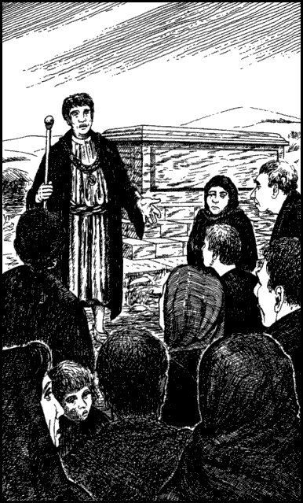

160
Beyond its encircling wall the deserted streets of Khor lend it the aspect of a ghost town. You magnify your vision and you are able to count more than a hundred freshly-dug graves within fifty paces of the town gates. The gates themselves hang open and unguarded, and when you pass through them, the hooves of your horses make a hollow echo along the empty streets beyond. You hear a distant bell tolling and you follow the sound to a mount which overlooks the town harbour. Here you see some of the inhabitants for the first time and you are shocked by how pale and gaunt they all appear.
A funeral is in progress and the bereaved are walking in line behind a hearse which bears a casket draped with black silk. The procession halts when it reaches the top of the mount and then the casket is quickly interred and sealed inside a marble tomb. A dignified-looking man addresses the mourners. He praises the qualities of the man they have laid to rest and then, in his official capacity as the Mayor of Khor, he declares that a state of quarantine will exist in the town from midnight onwards.
‘This quarantine will be strictly enforced,’ he says with a stern voice, ‘until the scourge of Bita Fever has been eradicated from our midst!’

If you possess the Grand Master Discipline of Deliverance, turn to 265.
If you do not possess this Discipline, turn to 178.